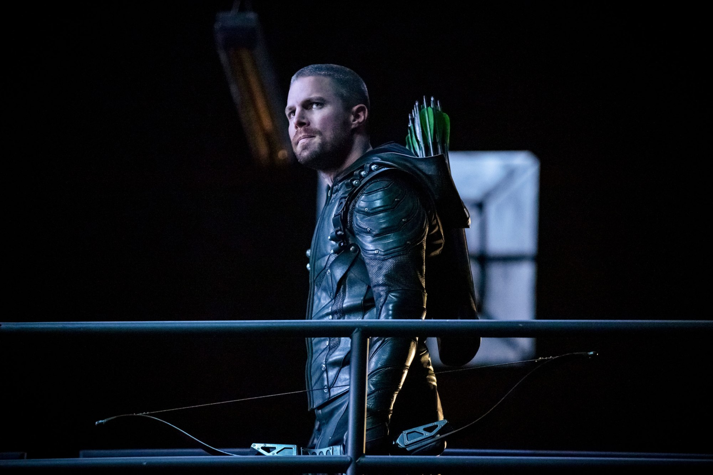
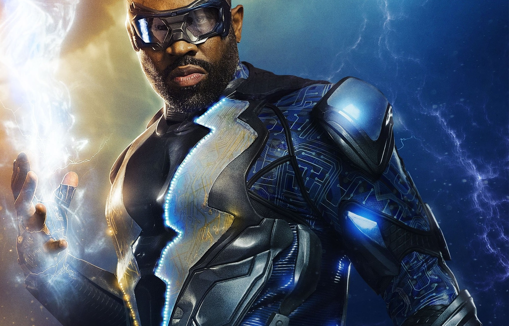
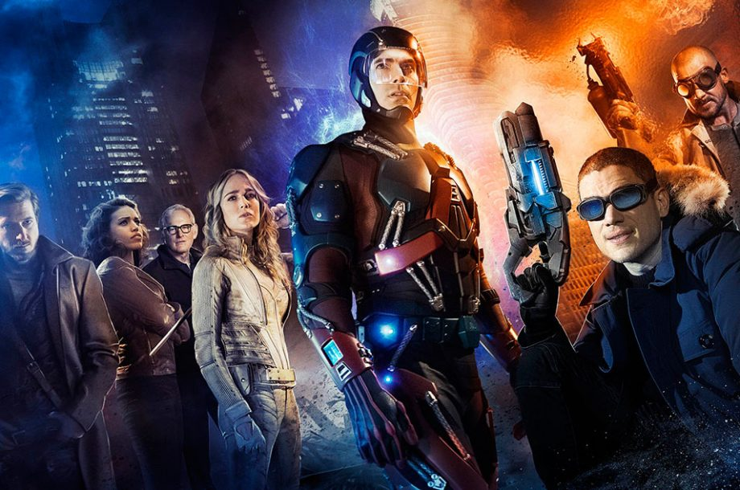

Barry Allen is a Central City police forensic scientist with a reasonably happy life, despite the childhood trauma of a mysterious red and yellow lightning killing his mother and framing his father. All that changes when a massive particle accelerator accident leads to Barry being struck by lightning in his lab. Coming out of coma nine months later, Barry and his new friends at S.T.A.R labs find that he now has the ability to move at superhuman speed. Furthermore, Barry learns that he is but one of many affected by that event, most of whom are using their powers for evil. Determined to make a difference, Barry dedicates his life to fighting such threats, as The Flash. While he gains allies he never expected, there are also secret forces determined to aid and manipulate him for their own agenda.
Arrow

Spoiled billionaire playboy Oliver Queen is missing and presumed dead when his yacht is lost at sea. He returns five years later a changed man, determined to clean up the city as a hooded vigilante armed with a bow. Oliver Queen and his father are lost at sea when their luxury yacht sinks, apparently in a storm.
Black Lightning

Jefferson Pierce is a man wrestling with a secret. As the father of two daughters and principal of a charter high school that also serves as a safe haven for young people in a New Orleans neighborhood overrun by gang violence, he is a hero to his community. Nine years ago, Pierce was a hero of a different sort. Gifted with the superhuman power to harness and control electricity, he used those powers to keep his hometown streets safe as the masked vigilante Black Lightning. However, after too many nights with his life on the line, and seeing the effects of the damage and loss that his alter ego was inflicting on his family, he left his Super Hero days behind and settled into being a principal and a dad. Choosing to help his city without using his superpowers, he watched his daughters Anissa and Jennifer grow into strong young women, even though his marriage to their mother, Lynn, suffered. Almost a decade later, Pierce's crime-fighting days are long behind him...or so he thought. But with crime and corruption spreading like wildfire, and those he cares about in the cross-hairs of the menacing local gang The One Hundred, Black Lightning returns - to save not only his family, but also the soul of his community.
DC Legends of tommorow

DC's Legends of Tomorrow, or simply Legends of Tomorrow, is an American superhero television series developed by Greg Berlanti, Marc Guggenheim, Andrew Kreisberg, and Phil Klemmer, who are also executive producers along with Sarah Schechter and Chris Fedak; Klemmer and Fedak serve as showrunners.